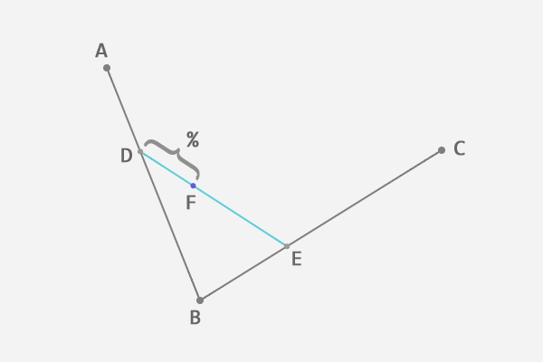
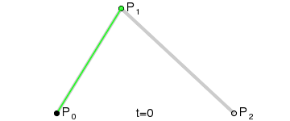
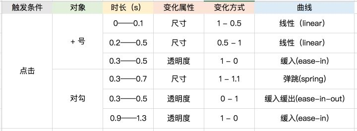

推荐阅读 2018.03
Week 1
1、SAY HELLO TO HOUDINI AND THE CSS PAINT API
介绍CSS HOUDINI，并且使用paint api为例子，实现了几个小功能
2、The Dark Side of Polyfilling CSS
介绍了写一个 CSS Polyfill 所需要做的一系列事情：fetching the styles => parsing styles to AST => modifying CSS AST => AST to CSS text => replacing styles。这个过程本身就较为繁琐与冗长，然而除此以外，一个CSS Polyfill 在实现中还会出现的一系列问题和一些缺陷，最终表达了CSS HOUDINI 对CSS的意义。
3、Content Security Policy 入门教程
通过设置CSP可以防御一些跨站脚本攻击等安全问题
4、优雅的提交你的 Git Commit Message
介绍了如何使用工具来优化与规范你的 Git 提交信息
5、多行文本 样式怎么没了？
一个排查线上多行文本样式的案例
6、巧用JS位运算
一些位运算的使用技巧
7、经验分享 | JavaScript反调试技巧
这篇文章总结了一下关于JavaScript反调试技巧方面的内容。反调试的一些方式：
- 函数重定义，使某些方法在调试时不可正常使用（例如console.log）
- while(true)无限断点debugger
- 通过判断函数执行时间差异判断是否被调试
- DevTools检测
let div = document.createElement('div');
let loop = setInterval(() => {
console.log(div);
console.clear();
});
Object.defineProperty(div,"id", {get: () => {
clearInterval(loop);
alert("Dev Tools detected!");
}});
反混淆：
- 隐式流完整性控制，通过堆栈跟踪来获取其原始名称或调用顺序
- 代理对象
8、函数式编程的一点实战
文章以一个简单的列表项筛选功能，来展示了如何使用了函数式编程思路，适合对函数式编程没有感受的人阅读
9、动画：从 AE 到 Web
作为一个前端工程师，当你遇到动画需求时，如何通过设计师给出的AE稿来做动画效果呢？看看这篇吧
10、12 Principles of Animation (Official Full Series)
介绍了动画领域的12项基本原则
11、贝塞尔曲线扫盲
介绍了贝塞尔曲线的由来，生成贝塞尔曲线的方式，贝塞尔曲线的应用，比较基础，适合简单了解
DF:DE = AD:AB = BE:BC


12、使用chrome dev tools 调试 NodeJS
可以使用Chrome Dev Tools来调试Node啦
Week 2
1、最全最好用的动效落地方法、都帮你总结好了（上）- 基础知识
动效设计的三个价值：满足用户写心理预期、引导用户注意力、情感化设计。
动效使用的一些注意点：
- 过动效暗示二维界面暗含的三维层级关系，及其暗含的操作逻辑
- 引导用户的注意力向界面重点元素
- 通过动态设计让情感化设计变得更生动
- 动效的视觉效果统一，控制数量，不滥用
2、最全最好用的动效落地方法、都帮你总结好了（下）- 落地方式
目前业界动效设计与实现的体系还未成熟，主要有这几方面的问题：
- 对接困难：开发和设计之间还没有一套成熟的对接标准。
- 设计困难：最常用的界面设计工具不能进行时间轴的设计，而AE这种传统工具缺少可交互性。
- 实现困难：增加了开发的成本。
在对接上，可以通过变化、时长、曲线来标注动画

同时可以考虑采用一些AE to JSON，或者新型的设计工具。在开发上则可以考虑一些开源实现。
同时文中还整理里一些动效设计的资源与工具。
3、HTMLUnknownElement与HTML5自定义元素的故事
首先HTMLUnknownElement与Custom Elements是不同的，换句通俗的话解释就是“自定义元素不等于随便定义元素”。HTMLUnknownElement继承HTMLElement中的方法，因此，基本上，常用的HTML方法都是可以畅快使用。Custom Elements则更为强大，通过继承相应的HTML元素对象，可以实现各类自定义功能。
4、How GraphQL Replaces Redux
GraphQL是一种服务端查询语言。本文介绍了在React中使用GraphQL为什么可以分担前端状态管理的压力，如果在一些场景下简化甚至省去Redux相应代码。
5、Redesigning Redux
文章首先指出了前端状态管理所面临的一些问题，因此引出了Redux这个流行的前端状态管理框架存在的必要性。然而，作者在文章中指出了Redux在设计（API设计与使用方式）上存在的一些缺陷。因此，在Redux基础上，进行了再封装，推出了Rematch https://github.com/rematch/rematch。
6、Service workers: the little heroes behind Progressive Web Apps
PWA技术栈中的重要组成部分：service worker。简要介绍了service worker的技术与在PWA中起到的作用。
7、How to Turn Your Website into a Mobile App with 7 Lines of JSON
8、How to build cross-platform mobile apps using nothing more than a JSON markup
随着混合应用形态的不断发展，为了解决混合问题的各种解决方案也层出不穷。Jasonette( https://github.com/Jasonette )就是其中一个解决方案。Jasonette可以通过纯json的配置方式，实现webview组件与native组件的融合，同时，还会提供通用方式来实现：webview与native之间的相互调用。
9、PWAs are coming to iOS 11.3: Cupertino, we have a problem
随着iOS推出了PWA技术（Manifest/Service Workers），PWA再次成为大家关注的技术。然而，目前iOS中的PWA技术与android设备中的PWA技术存在一定的差异。